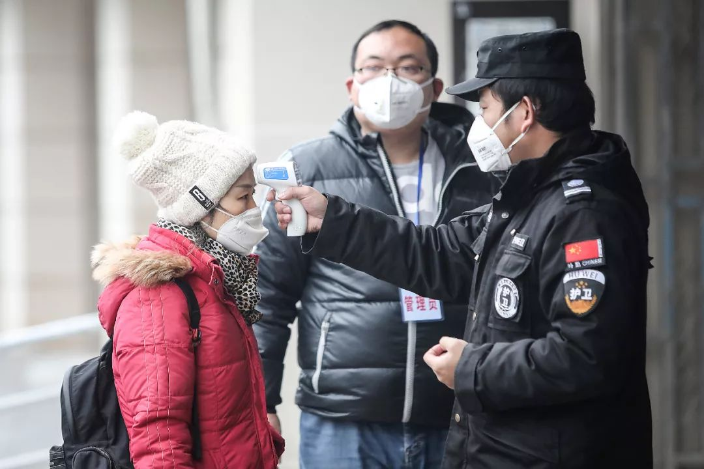

试剂盒供不应求，武汉新型冠状病毒肺炎确诊之难
原文链接 备份链接 根据国家卫健委的通报，截至1月23日零点，共统计到国内新型冠状病毒感染的肺炎确诊病例571例，其中超过400例来自湖北。死亡17例，均来自湖北。此刻的武汉面临以下问题：试剂盒数量不够、确诊艰难、床位短缺、高度疑似患者 …

试剂盒的供给端产量充足，并非“供不应求”，而是卡在了春节运力紧张、高门槛的检测条件、以及相关药品资质的审批上。为此，国家药监局已于近日开启快速审批通道。

记者 | 黄子懿 严岩
除夕夜：12万人份的试剂盒
▲▲▲
1月24日，大年三十，上海小雨。闵行区龙吴路银都路上，四车道的马路上看不到一个人影。拐进一个园区，看到一栋楼亮着灯，远远望去就看见不少戴着口罩的人，在合作装配一箱箱盒子。盒子不大，红紫色的壳，远看像是一个药盒。这样一个盒子，是诊断武汉新型冠状病毒肺炎的关键所在。

新型冠状病毒核酸检测试剂盒
这些盒子都是即将送往武汉疫区的“核酸检测试剂盒”，由上海捷诺生物科技公司研发，这家公司是国家卫健委公布确认的三家试剂盒生产、采购公司之一。一个长宽与智能手机大小差不多的盒子，可供50人使用。在阴雨连绵的大年三十，捷诺的相关工作人员对本刊记者表示，公司目前正在加班加点赶工，一共60-70个人连轴转，当天预计在下班前可以完成生产12万人份的工作量，不眠不休可以更多。
新型冠状病毒肺炎疫情仍在蔓延，在湖北武汉、黄冈、孝感等多地，用于确诊的检测试剂盒却火线告急，大量患者徘徊在医院门外，无法及时确诊。危难之际，生产商在加班加点地赶工，满足应急之需。除上海捷诺之外，国家卫健委还确认了上海伯杰、上海辉睿作为官方认可的供应商。
“注定是个不平凡的除夕，注定是个不平凡的年。”除夕夜零点将近时，美国佛罗里达大学博士、宁波海尔施基因科技有限公司技术总监吴勇发了一条朋友圈。照片上，员工们在会议室内，用PPT讨论着检测试剂盒。参会的十几人中，每人点了一份肯德基外卖作为年夜饭。随后，一位技术人员穿着防护服、戴着护目镜与口罩，走进了灭菌室。
海尔施基因科技也是能生产新型冠状病毒检测试剂的公司之一。吴勇介绍，临床诊断试剂盒生产是成熟的工业体系，国内有多家生产IVD核酸检测试剂盒的公司。去年12月8日，武汉发现首例病例，1月11日科研机构公布基因组序列信息，约有30个厂家在一周内便研发出针对新型冠状病毒检测试剂。**虽然国家疾控中心只推荐了三家企业的采购名单，但名单之外的企业也在加班加点生产。
**

极快的研发与生产进度，对应的是超高的需求，来自以武汉为重点的全国各地。一家试剂盒生产商透露，试剂盒紧缺不仅存在于武汉，在沿海、西南等地，很多医院和疾控系统已开始大量进货试剂盒，以供疑似病例的确诊。
“本来我们准备的是每日几千人份的，现在看产量可能得增加到每日上万人份。”吴勇说，目前公司节奏极为紧张，市场销售人员满负荷运转，上游供应链企业也紧急开工配合。过去一周，海尔施已为全国各地的医院和疾控部门免费提供了上万份检测试剂。
试剂盒企业都在加班加点生产，但是否能满足武汉及湖北的检测需求？多家企业表示，试剂盒当前的产量与产能绝不是问题。“武汉需要多少，我们就能供应多少。”上海捷诺相关工作人员曾公开表示，公司目前已完成交付约15万人份的量。除夕前，他们在1月23日晚就通过专车，“将2万人份开车送到武汉城市边境，由武汉疾控中心收下。”该工作人员告诉本刊。
其他企业也有类似表态。国家委托生产的上海辉睿生物对媒体表示，目前他们已累计生产约10万人份的试剂盒，日产量在2-3万人份，生产端供给充足。江苏硕世生物也称，公司正以每天10万人份的生产速度提供市场。
“我们春节都是不休息的。”吴勇说，后期将酌情加大产能，最多时企业能做到一年上百万人份。他说，如果后期需求加大的话，公司可能会把产能做满，以供应市场需求。从生产供应的数量上看，试剂盒无疑是充足的。
门槛：高检测条件
▲▲▲
然而，这么多试剂盒，为何没能在不计其数的疑似患者身上得到使用？
物流是一个原因。很多试剂盒需要冷链运输，但时值春节，运力紧张，一些产品跑在陆路，一些产品则通过人肉带货的方式空运到全国各地。
更重要的原因是，利用试剂盒进行检测有很高门槛，需要配备相关实验室、仪器和技术人员。“不是说有了这个盒子就在哪都能测，不是的。”一位医护人员说。
按照规定流程，试剂盒一般会被送往省级疾控中心，再由省级疾控中心下发。云南省疾控中心的一位负责人对本刊记者表示，对于一种新发传染病病毒，要按照国家规定的传染病毒的甲类管理。为避免污染，检测至少要在达到生物安全二级的实验室里做，“可能大部分医院都没有。”
检测实验室里，要有负压设备，气流只能进不能出；实验室的洁净度、通风系统、消毒灭菌都有极高的要求。如果不具备条件去做检验，很可能会出现病毒泄漏的情况，实验室成了污染源。“现在规定就说要在二级防护的环境里面，采用三级防护的人员保护措施来做。”吴勇说，**这要求很高，意味着基本只有三甲医院才能做相关检测，“小医院做不了”。
**

问题在于，武汉当前收治疑似新型冠状病毒肺炎病人的门诊定点医院，多是中小型医院，没有检测条件。这是武汉为了应对越来越多的病人所采取的“7+7”包保制度，即征用7家二级公立医院做发热定点门诊，每家定点医院有一家对应的大型综合医院做对口帮扶。在人满为患的定点医院看病的病人，需要对口帮扶医院乃至疾控中心才能做检测。
在定点医院武汉红十字会医院、武汉汉口医院，医护人员都表示，院里没有试剂盒和检测条件，医院只有将高危疑似病患向上报。“我们只有靠疾控和协和帮我们做，只有他们才有条件。”红十字会医院一名医护人员说。
但事实上，很多三甲医院也没有类似条件。南京鼓楼医院（三甲）的医生说，其医院实验室达不到做检测的标准。武汉当地一位医生说，“武汉三甲医院里几乎也没有几家能够做这个。”据了解，这些具备检测条件的主要集中在同济、协和以及省市级疾控中心。由于疫情爆发，这些实验室面临人手紧缺的难题。
而在武汉周边的湖北其他城市，具备检测条件的医院数量就更加有限了，普遍集中在市级大医院。以黄冈市为例，据本刊记者了解，当地公布的相关定点医院中，有检测条件和设备的只有1-2家。这意味着，在全域封城的湖北，有大量基层医院不具备检测条件，对于中心城区之外的疑似患者来说，确诊遥不可及。
类似的情况也存在于全国其他地区。安徽一家地市医院工作人员透露，能做检测的医院很少，“基本上安徽省发热的定点医院（共37家），加起来就那几家。”
应急：特殊通道开启
▲▲▲
武汉市卫健委1月23日称，从1月22日开始，已指定各定点救治医院、发热定点诊疗医院的对口帮扶医院以及市疾控中心等具备条件和级别的实验室开展相关检测工作。第一批共10家机构，预计全部运行起来每天可检测样本近2000份，将有3万人份试剂盒发放到指定检测机构，目前已下发6000人份。
这是武汉为了“为适应当前防控形势需要，提高检测速度”，向上级请示的结果。在此之前，病例样本要由辖区疾控中心转运到市疾控中心，再转运到省疾控中心进行检测，每天可检测样本200多份，时长普遍在两天左右。武汉卫健委还透露，1月16日之前，整个湖北省都没有试剂盒，需送到国家指定机构，结果返回约需3—5天。这是19号之后，公布的确诊数量激增的原因之一。
这也反映了疫情确诊在当下的一个困局：很多医院即使具备条件，也没有检测的资质。医院的病例样本被送往省市疾控中心检测，一来一回，原本几小时就能出来的结果，被延长至了2-3天——根据国家政策，医院目前无法直接采购新型病毒检测试剂盒，只有疾控中心有试剂盒，这也导致了医院端的试剂盒短缺。
前述云南疾控负责人就说，不会将试剂盒直接下发给医院。在孝感，作为三甲的市中心医院目前没有试剂盒，而市第一人民医院则说，试剂盒数量要“从上面发，有时有，有时没有。”
另一个现实困局在于，对于生产厂家来说，试剂盒供给医院是需要药监局注册证的，但今天国内任何一个厂家都没有相关资质。按照正常流程，如果一个核酸检测试剂盒从研发开始，到获得药监局的注册证，一般需要3-5年时间。其中涉及设计、验证、产品注册检验、临床实验、国家药监局注册审批等，时间长，流程多。当前，这个过程显然不能满足应急需求。

据媒体报道，为此，国家药监局近日开通了快速审批通道，启动紧急审评。共有7家企业研发的新型冠状病毒核酸检测试剂盒进入审批，包括此前国家卫健委确认的三家供应企业。1月24日，上海之江生物科技股份有限公司通过检验，成为我国法定检验机构检定合格的首个新型冠状病毒检测产品。不过其仅是完成了送检，尚未正式获批上市，后续流程仍未走完。
然而，疫情不等人。随着疫情蔓延，很多生产厂家开始直供医院，销售人员的电话被直接挂到网上，供各地政府、医院、疾控咨询。各大试剂盒生产商开始接到一些医院的咨询电话。“电话接都接不过来，每天就跟打仗一样。”上海辉睿市场部一名工作人员说。
“这是应急时刻的特殊之举。”一位业内人士表示，这种状态下，3-5年的时间在当下被缩短到了15天左右。
对于一些医院和患者来说，“确诊”也并非意味着一切，只是成为了官方通报里的一个数字。即使是这个数字，也需二次检测确认后统一发布。前述安徽医院的医护人员表示，他们有检疫盒和一切设备，就是确诊需卫健委统一发布，“不让乱发消息，即使医疗条件和所有设备在全国都是最先进的，也需要上报。”
（本刊实习记者岳颖、兰杰对本文亦有贡献）
作者档案

**黄子懿
**
做好打持久战的准备。
26分钟前


三联生活周刊
个人微博：@杰货

**严岩
**
疫情还没完，懂疫苗的欢迎联系我。
26分钟前
三联生活周刊
微信请加：roseisnotred
#我在疫情一线#
话题征稿持续进行中
《三联生活周刊》全媒体现面向所有读者征稿。包括但不限于：奋斗在疫情一线的医护人员、媒体同行们的故事，专业人士对接下来防疫工作的建议……
此次征稿形式不限：文字（1500～2500字为佳）、图片（原创拍摄）、音频视频（原创录制）都欢迎。大家携手，共度难关！注：请务必保证故事真实、客观，不造谣、不传谣。
《三联生活周刊》微信公号投稿邮箱：zhuangao@lifeweek.com.cn来稿格式：#我在疫情一线#➕标题《三联生活周刊》官方微博参与话题：#我在疫情一线#《三联生活周刊》中读APP投稿邮箱（音频投稿为主，5分钟以内为佳）zhongdu@lifeweek.com.cn
期待你的来稿！
⊙文章版权归《三联生活周刊》所有，欢迎转发到朋友圈，转载开白请联系后台。未经同意，严禁转载至网站、APP等。
黄子懿
微信扫一扫赞赏作者 赞赏
长按二维码向我转账
受苹果公司新规定影响，微信 iOS 版的赞赏功能被关闭，可通过二维码转账支持公众号。
文章已于修改
原文链接 备份链接 根据国家卫健委的通报，截至1月23日零点，共统计到国内新型冠状病毒感染的肺炎确诊病例571例，其中超过400例来自湖北。死亡17例，均来自湖北。此刻的武汉面临以下问题：试剂盒数量不够、确诊艰难、床位短缺、高度疑似患者 …
原文链接 备份链接 武汉各大医院发热门诊的紧张态势已有一周，七家定点医院启动才两天已被压到极限。 武汉不缺顶级医院，不缺顶级专家，不缺顶级医疗能力，缺的是公共卫生防控能力、行政效率和疫情处理流程。 在患者和大医疗机构之间，未见到基层 …
原文链接 备份链接 武汉某大型医院血液科医生朱洪亮表示，其实这个季节除了新型冠状病毒之外，还有很多如甲流、乙流等病毒流行，这些病毒也会引起发热和肺炎等症状，比较常见。但现在一些发热病人都涌向发热门诊，面对这种压力，武汉的医疗资源是承受不了 …
原文链接 备份链接 【财新网】（记者 黄姝伦 赵今朝）新型冠状病毒感染肺炎疫情还在爆发式增长，武汉1月23日上午10点宣布交通封城。官方披露，截至1月23日24时，全国确诊病例达850例， 26例死亡绝大部分集中在武汉市，其中河北省出现首 …
原文链接 备份链接 图 / 上海捷诺生物官网 生产企业工人大多已经放假回家，厂家备货也不够充足。就算外面有支援调货过来，封城后也已经很难运送进来了。很多人想当然地以为这是国家供应的，其实它是按照市场采购流程走的，厂商自己要想办法完成配 …